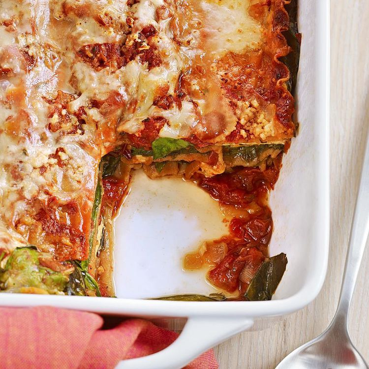

Lasagna with Slow-Roasted Tomato Sauce
Home

Description
Slow-roasting the tomatoes gives the tomato sauce for this lasagna recipe an intense depth of flavor—which is then enhanced by the umami in onions, Parmesan and spinach. The lasagna noodles are layered into the lasagna uncooked; the moisture from the fresh spinach cooks them perfectly as the lasagna bakes in the oven.
Ingredients
Sauce
- 3 pounds plum tomatoes, halved lengthwise
- 2 tablespoons extra-virgin olive oil, divided
- 2 teaspoons dried basil, divided
- 1 ¼ teaspoons dried oregano, divided
- 1 medium onion, chopped
- 3 cloves garlic, minced
- 1 cup water
- 1 6-ounce can tomato paste
- ½ teaspoon salt
- ⅛ teaspoon freshly ground pepper
Lasagna
- 1 15- to 16-ounce container part-skim ricotta cheese
- 1 ½ cups reduced-fat shredded mozzarella, divided
- ½ cup grated Parmesan cheese, divided
- ½ teaspoon salt
- ¼ teaspoon dried oregano
- ⅛ teaspoon freshly ground pepper
- 9 lasagna noodles (uncooked), preferably whole-wheat
- 10 ounces baby spinach
Steps
- To prepare sauce: Preheat oven to 300 degrees F. Coat a baking sheet with cooking spray.
- Combine tomatoes, 1 tablespoon oil, 1 teaspoon basil and 1 teaspoon oregano in a large bowl. Arrange the seasoned tomato halves, cut-side up, on the prepared baking sheet. Bake in the center of the oven until the tomatoes are very soft, 2 hours. Let cool 15 minutes. Transfer the tomatoes to a work surface and coarsely chop.
- Heat the remaining 1 tablespoon oil in a medium saucepan over medium-high heat. Add onion, garlic, the remaining 1 teaspoon basil and 1/4 teaspoon oregano; cook, stirring occasionally, until beginning to soften, 2 to 3 minutes. Add the roasted tomatoes, water and tomato paste, stirring until the tomato paste is incorporated. Bring to a boil; reduce heat to medium-low, cover and simmer, stirring occasionally, for 10 minutes. Remove from the heat and stir in salt and pepper.
- To prepare lasagna: Meanwhile, combine ricotta, 3/4 cup mozzarella, 1/4 cup Parmesan, salt, oregano and pepper in a bowl.
- Increase oven temperature to 350 degrees . Coat a 9-by-13-inch baking dish with cooking spray.
- Spread 2 cups of the tomato sauce in the prepared baking dish. Top with 3 lasagna noodles. Top the noodles with half the spinach. Dollop half of the ricotta mixture over the spinach, then spread 1 cup of tomato sauce over the ricotta. Repeat the layers once more, pressing down on the filling as you layer; the pan will be very full. Place the remaining 3 noodles on top and spread with the remaining tomato sauce. Sprinkle with the remaining 3/4 cup mozzarella and 1/4 cup Parmesan. Cover with foil that has been coated with cooking spray.
- Bake the lasagna for 50 minutes. Uncover and bake until the cheese browns slightly, about 10 minutes more. Let stand for 10 minutes before serving.